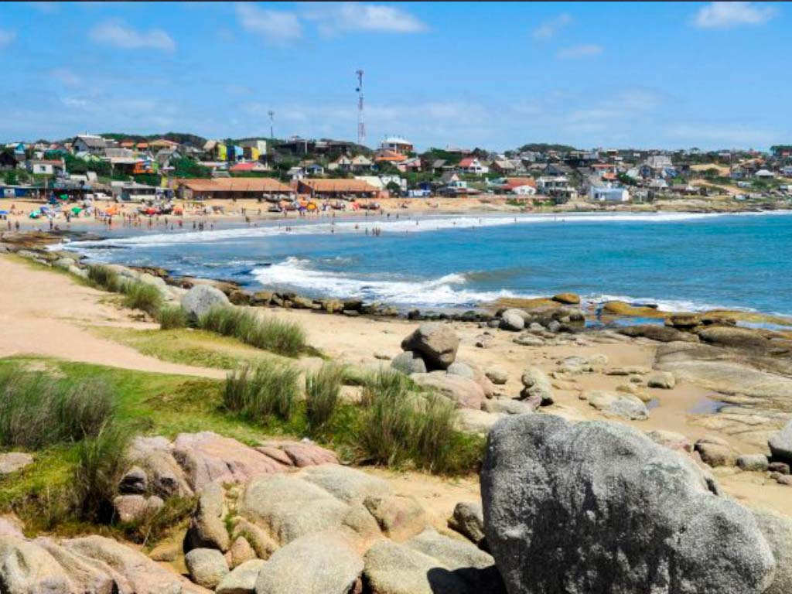
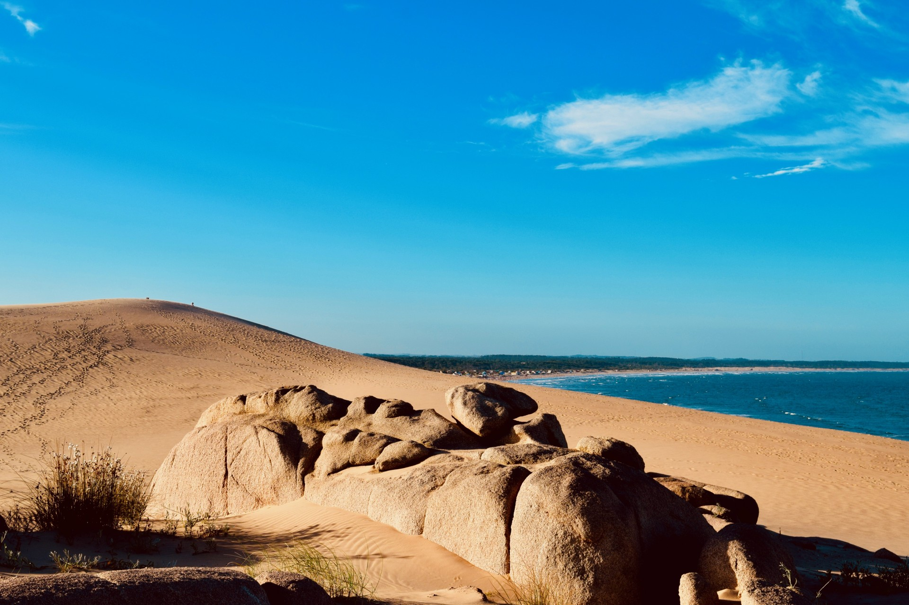
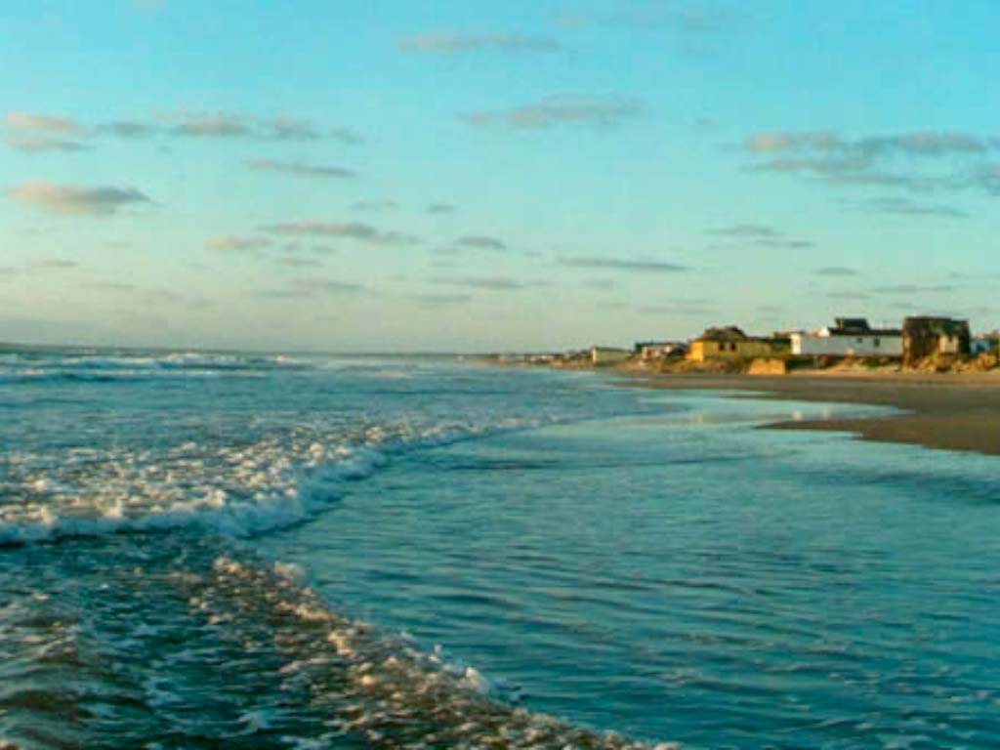

¿Por donde te gustaria comenzar?
PUNTA DEL DIABLO
Punta del Diablo es una pequeña localidad pesquera y un centro turístico junto al mar en la costa este de Uruguay. La Playa de los Pescadores en el centro está llena de botes pesqueros y cuenta con el monumento blanco De Artigas a Bolívar sobre sus rocas. Cerca están los puestos que venden artesanías y la playa Rivero, conocida por su fuerte oleaje. La playa Grande de arena y con curvas bordea el Parque Nacional Santa Teresa, que se caracteriza por sus bosques de eucaliptos y pinos.
CABO POLONIO
Cabo Polonio es un balneario ubicado en el departamento de Rocha, en Uruguay, y forma parte del parque nacional Cabo Polonio. Se encuentra a escasa distancia del balneario Valizas, y tiene tres pequeñas islas frente a su costa conocidas como islas de Torres (isla Rasa, isla Encantada y El Islote). En las mismas se encuentra una importante reserva de lobos marinos, los cuales pueden ser vistos desde la costa o desde el Faro de Cabo Polonio
LA PALOMA
La Paloma es una ciudad de la costa sureste de Uruguay, al este de Montevideo. El faro blanco y delgado de Cabo Santa María mira desde lo alto al Atlántico, cerca de las tradicionales cabañas de los pescadores. Cerca están la Bahía Chica y la Bahía Grande, playas de arena con aguas tranquilas. El Centro Cultural La Paloma es sede de eventos culturales. Al oeste se encuentra la playa Los Botes, con un fuerte oleaje y la Laguna de Rocha, una reserva de humedales con aves migratorias.

AGUAS DULCES
Veraneantes castillenses deseosos de “costa, viento y marea” llegaron a principios del siglo XX en carretas “a toda marcha, contra bañados y médanos”. Agua Dulce llamaban al poblado, por las lagunas y los manantiales de la zona, que antes habían sido aprovechados por embarcaciones coloniales. Plantaron sus ranchos de paja contra el mar y sobre la arena, más adelante los construirían sobre el mar por medio de pilotes…“Aguas Dulces” brotaban por sus cachimbas.
